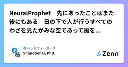
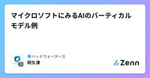
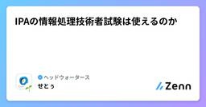
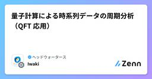
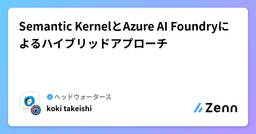
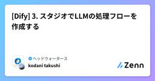
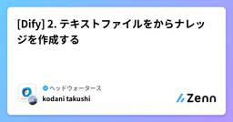
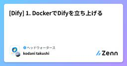

ヘッドウォータースのフィード
https://zenn.dev/p/headwaters
株式会社ヘッドウォータースのテックブログです。 AIエージェント、生成AI、LLM、Azureのサービスや資格、IoT、XR系などData&AIとApp modernizeに関して幅広く投稿します！
フィード

NeuralProphet 先にあったことはまた後にもある 日の下で人が行うすべてのわざを見たがみな空であって風をとらえるようである
ヘッドウォータースのフィード
会社のブログを全部チェックしている人もいるらしいということを聞きましたので、今回は真面目に哲学調なタイトルにしてみました。出典はユダヤの古い書、コヘレトの言葉（מְגִילָת קֹהֶלֶת）です。（コヘレト＝哲学者・伝道者）新しいことが起きたとよく言いますが、紐解いていくと昔も同様のことがあり繰り返しているだけなのだというソロモン王の言葉です。過去と同じ条件、同じ値になることは稀です。まさに風をとらえるようなものですが、分解された要素は繰り返し、法則 に従って動いているので、予測できるのです。最近取り上げているprophetや今回取り上げるNeuralProphetは過去の...
1日前

マイクロソフトにみるAIのバーティカルモデル例
ヘッドウォータースのフィード
はじめに最近、ニュースでAGIという言葉をよく聞きます。AGI(Artificial General Intelligence)への挑戦を宣言するOpenAI, Metaの話題が多いですね。これは、ありとあらゆるタスクを横断的にこなすホリゾンタル(水平)のアプローチかと思います。一方、それを対となるアプローチとしてバーティカル(垂直)があります。特定の領域に特化したAIであり、それぞれの分野で高い精度と効率を発揮するというものです。それ以外にも領域を絞ることによってモデルサイズを小さくすることができるというメリットもあり、ここ最近はローカル端末で動作するサイズ感のモデルが次々と...
2日前

IPAの情報処理技術者試験は使えるのか 3
3
ヘッドウォータースのフィード
IPAの資格って使える？先日、応用情報技術者試験に合格しました。嬉しいです。ところで、IPAの資格の話になるとこんな声を聞くことがあります。「実務で使わなくない？実務のほうが大事じゃない？」「エンジニア以外必要ないじゃん？」「基本情報とか応用情報って取る意味ある？」確かに応用情報はじめ、IPA資格には実務に直結しづらい内容も含まれています。ただし、資格を取得した方・取得しようとしている方の中で、「使えるか使えないか」といった単一的な視点で考えている方も少ないと思います。私もそんなふうには考えていませんので、今回は上にあるような声に応えられるよう、IPA資格...
2日前

量子計算による時系列データの周期分析（QFT 応用）
ヘッドウォータースのフィード
概要時系列データの中から周期性（繰り返しパターンや周波数）を見つける方法として、量子フーリエ変換（QFT）を使うことで、古典的なフーリエ変換に比べて高速に解析可能かどうかについて、シンプルなサンプルを踏まえて解析の流れなどを簡易検証してみる。 解析の流れステップ内容① データのサンプリング時系列データを取り出し、分析しやすいサイズ（2 の累乗が理想）に調整② 正規化データを 0~1 に正規化し、量子ビットの振幅に変換できる形にする③ データの量子状態へのエンコード量子ビットにデータを組み込む（振幅符号化など）④ QFT（量...
5日前
JSTQB Foundation Level合格記
ヘッドウォータースのフィード
記事の内容JSTQB Foundation Level試験を受験し、合格しました。合格までの勉強方法などについてお伝えしていきます。JSTQB認定試験申し込みページ 筆者について2025年に株式会社ヘッドウォータースへ新卒エンジニアとして入社したものです。文系大学卒業で実務経験なしの状態からJSTQBの勉強を始めました。 受験の経緯社内での勉強会開催に合わせ「取り敢えずやってみるか」という思いから、受験を決意しました。 使用した教材YouTubeのシラバス解説動画テス友徹底攻略 JSTQB Foundation教科書＆問題集 シラバス2023対応公式...
5日前
AppServiceにデプロイしたい！
ヘッドウォータースのフィード
はじめにAppServiceにコンテナベースでデプロイをしようと思っていました。以前は出来ていた手順がなぜか出来なかったので別の手順を探してデプロイをしました。いつものやり方であれば、AzureContainerRegistry（以下ACR）を使用して、そこのイメージをデプロイして、AppServiceからコンテナを選択していました。https://learn.microsoft.com/ja-jp/azure/container-registry/container-registry-quickstart-task-cli やっていたこと開発していたものを、コンテナ...
5日前

Semantic KernelとAzure AI Foundryによるハイブリッドアプローチ
ヘッドウォータースのフィード
はじめにAzure AI Foundryを使ったMulti-AgentのアーキテクチャとAI Foundryでどんな感じでエージェントを管理できるのか試してみようかと。Multi-Agent Custom Automation Engine Solution AcceleratorというMicrosoftのリポジトリがあったので、試してみます。GitHubのCodeSpaceでデプロイしたのですが、そこで作成してもらったデプロイ手順は最後にそのまま載せます。 ソリューションアーキテクチャContainer AppsからAzure AI Foundryを呼んでいます。...
6日前

[Dify] 3. スタジオでLLMの処理フローを作成する
ヘッドウォータースのフィード
執筆日2025/07/19 概要今更Dify第3弾です。初期はたぶんなかったと思うのですが、マルチエージェント時代に対応するためにGUIで簡単にLLMとナレッジの接続を構築し処理フローを作成できるようになっていました。https://docs.dify.ai/ja-jp/guides/workflow/concepts 前提第1弾: DockerでDifyが立ち上がっている第2弾: ナレッジ作成済み・モデルプロバイダーでLLMの設定済み 作業 フローを作成するヘッダーからスタジオを選択するとフロー作成ができます。ワークフロー・チャットフロー・チャ...
7日前

[Dify] 2. テキストファイルをからナレッジを作成する
ヘッドウォータースのフィード
執筆日2025/07/19 概要今更Dify第2弾です。テキストファイルからナレッジを作成します。RAGの基盤になるやつですね。Notionやウェブサイトから同期してナレッジ作成もできますがNotionは自分のアカウントとの接続が、ウェブサイトも Jina Reader, Firecrawl, WaterCrwl のどれかでアカウント作成してAPIが利用できるようにする必要があります。WaterCrwl は Dify チームが作成しているらしく、軽量で最適化されていそうなのでいつか試したいです。また外部リソースによる接続も可能でこちらで解説されています。AWS Bedroc...
7日前

[Dify] 1. DockerでDifyを立ち上げる
ヘッドウォータースのフィード
執筆日2025/07/19 概要今更Dify？と思われるかもしれませんが、僕もそう思います。色々思うところあってオープンソースは便利だけど開発が活発過ぎて大変そう、廃れたときにそれ使い続けるのどうなんだろう、というダブスタな忌避をしていたため、ちょっと触ってなるほどね～くらいにとどめていました。LLM開発も色々と経験してやっぱりPoC段階でどんな運用か固まっていなかったり、LLM性能を試したいだけの時は簡単に試せる環境の提供方法としてDify便利だなあという気持ちになったので今後しばらく簡単な使い方のまとめブログを書いていきたいと思います。というわけで初回は立ち上げです。ブ...
7日前

コーディング・ゼロは実現するのか？
ヘッドウォータースのフィード
孫さんからソフトバンクでコードを書くことはなくなるという話がありましたが、それって可能なのかなーと妄想してみます。まずAgentic RAG Systemの登場により、実行計画をたてマルチエージェントがステップごとに最適なタスクを選択できるようになったことで、ある程度複雑なワークフローをAIエージェントが実行可能なりました。ただ、依然、ユーザーの暗黙知になっている情報をエージェントやシステムが活用できない問題があり、様々な業務/タスクの自動化に向けて大きな障壁になっていると思います。一方でLLMが得意なタスクの一つにコード生成があります。ある程度具体的な指示や機能を提示すれば人を超...
8日前
【Azure AI Foundry】- Azure AI Foundryのポータルで「AIサービスが表示されない」問題の原因と対処法
ヘッドウォータースのフィード
執筆日2025/7/18 起きたこと同僚から「Azure AI FoundryのポータルでAIサービスが表示されない」と相談を受けました。確認すると、確かに見当たらない…。なぜ？ 原因は？調査の結果、Foundryプロジェクトで作成していたのが原因でした。 Azure AI Foundryのプロジェクトの種類Azure AI Foundryでは、以下の2種類のプロジェクトがサポートされています。Hub ベースのプロジェクトFoundry プロジェクトhttps://learn.microsoft.com/ja-jp/azure/ai-...
8日前
あなたが離れていく理由を僕達はまだ知らない でもきっと全部データが教えてくれる
ヘッドウォータースのフィード
離脱予測分析について２回目です。今回は最近の研究動向を紹介します。離脱分析については以前から多くの研究があります。最近はPOSなどで購買情報のデータ化やサブスクリプションによるビジネスモデルの影響で、ニーズが増えています。特に、これまではWEB経由であったものがスマートフォンのアプリを経由してサービス提供を行うものが増え、顧客の維持継続が重要性を増しています。実務に使える機械学習ということです。離脱解析では離脱率を特徴量から識別学習を適用するものや、Coxハザードモデルによる生存解析をするものなどいくつかあります。さらに最近LLMを利用した研究もいくつか発表されていて注目...
8日前
【Azure】- App Service から Azure AI Foundry に接続できない原因と解決手順
ヘッドウォータースのフィード
執筆日2025/7/18 構成図 発生した事象アプリ実行時に、以下のエラーが表示されました。 原因App Service に対して 「Azure AI User」ロール が割り当てられていなかったことが原因です。 解決方法Azure ポータルで対象の App Service を開き、「ID」メニューをクリックシステム割り当て ID の状態を「オン」に変更「Azure ロールの割り当て」をクリック「+ ロールの割り当ての追加（プレビュー）」を選択し、「Azure AI User」ロールを追加これで無事にエラーが解消され、App Servi...
8日前
Pythonエンジニア必見！アプリ開発とWeb開発の基礎を学べるおすすめ本7選
ヘッドウォータースのフィード
AIを活用する企業が増えてきたため、Pythonでアプリ開発している企業やAIのチューニングで使用される例が増えてきました。これからPythonエンジニアを目指す方やセカンドスキルで身につけたい方にとって、プログラミングの基礎固めは成功への第一歩です。そこで今回は、アプリ開発の基礎を学べる本や、Web開発に役立つ実践的な書籍を厳選して7冊ご紹介します。プログラミングスキルを磨いてキャリアを一層充実させましょう！ ポジショニングマップ紹介する本が初心者に向いているのかや基礎的なのかをポジショニングしました。ポジショニングマップ基礎＆初心者：プログラミング初心者にピッタリの本...
9日前
【A2A/python_a2a】- コードを書きながらA2Aを理解していく①
ヘッドウォータースのフィード
執筆日2025/7/17 やることA2Aの勉強をしています。概念は理解できたが、実装がまだできない...python_a2aでコードを書きかながら、A2Aの理解を深めていく今回は、以下の赤枠を差作成する ライブラリのインストールまずは pip でライブラリを導入します。pip install python_a2a Agentを定義する天気予報のダミーデータを返すエージェントを作ってみます。main.pyfrom python_a2a import A2AServer, skill, agent, run_server, TaskStatus, Ta...
9日前
DatabricksでWebアプリを構築からデプロイまでしてみた
ヘッドウォータースのフィード
Databricksでアプリがデプロイできるようになたよ今月からDatabricks Appが日本リージョンでも利用できるようになりました。ーDatabricks Appとは？ーDatabricks Appsは、データやAIを活用したアプリケーションをDatabricksプラットフォーム上で直接構築・デプロイできる新機能です。従来必要だった個別のインフラストラクチャ管理が不要となり、Unity CatalogやDatabricks SQLなどの既存サービスとシームレスに統合できます。PythonやNode.jsの主要フレームワークに対応し、インタラクティブなダッシュボードから...
11日前
【Azure OpenAI】- detail パラメータの使い方について
ヘッドウォータースのフィード
執筆日2025/7/15 解像度制御オプションとは？Azure OpenAIのVision対応モデルでは、画像の処理精度と速度／コストをバランスよく制御するために、detail パラメータで解像度の指定ができます。指定可能な値は以下の3つです。オプション内容auto既定の設定。 モデルは、画像入力のサイズに基づいて、lowまたはhighを決定します。low512×512 の低解像度で高速処理、トークン消費を節約 できます。その結果、微細さが重要ではないシナリオでは応答が速くなり、トークンの消費量が少なくなります。high高解像度でより...
11日前
【Azure】- Structured Outputsの「description」活用でOCR精度を改善した話
ヘッドウォータースのフィード
執筆日2025/7/15 はじめにStructured outputsを使う際、普段は Pydantic などで型を定義している方も多いのではないでしょうか？たとえば、以下のような形式です。class Test(BaseModel): name: str age: intこのように型を使うと、LLMが構造化された出力を生成してくれて便利ですよね。私自身も登場の時からStructured outputsをよく活用しています。https://zenn.dev/headwaters/articles/c11fd63ceb09cd OCRで精度が出なかっ...
11日前
【OpenCV】- 二値化（閾値処理）を実施する
ヘッドウォータースのフィード
執筆日2025/7/14 やることOpenCVを使い二値化の検証を実施します。 使う画像弊社のロゴを使います。なんでも大丈夫です。 二値化（閾値を自分で設定する）main.pyimport cv2# 画像の読み込みimg = cv2.imread("<ファイルパス>", 0)# 閾値の設定threshold = 100# 二値化(閾値100を超えた画素を255にする。)ret, img_thresh = cv2.threshold(img, threshold, 255, cv2.THRESH_BINARY)print(f"...
13日前